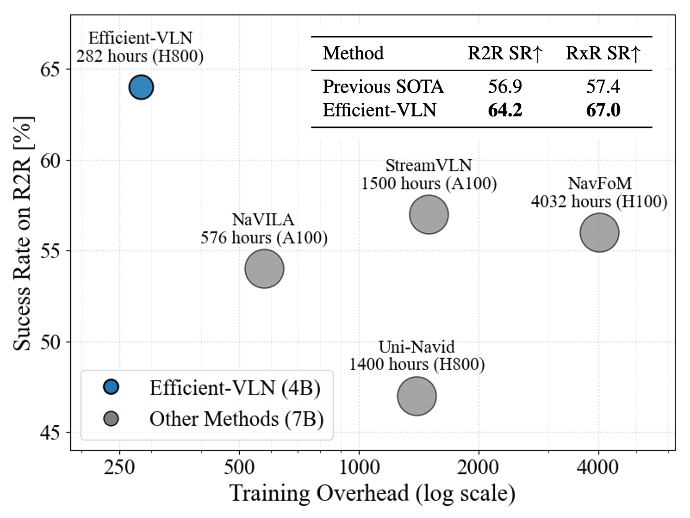
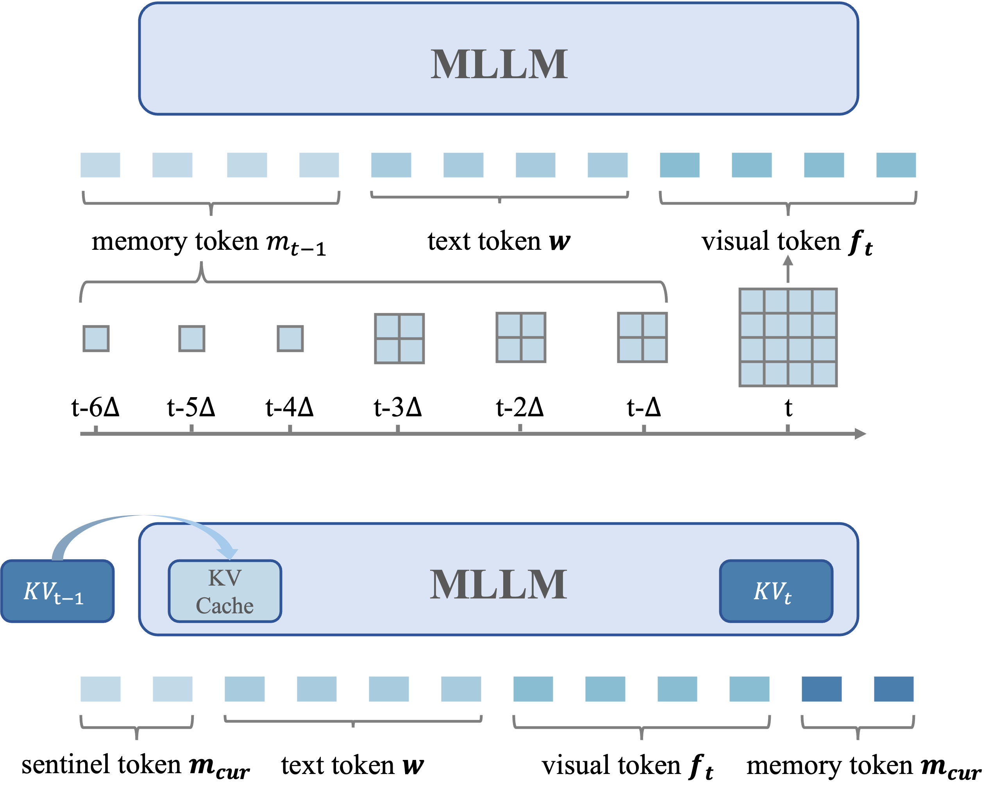
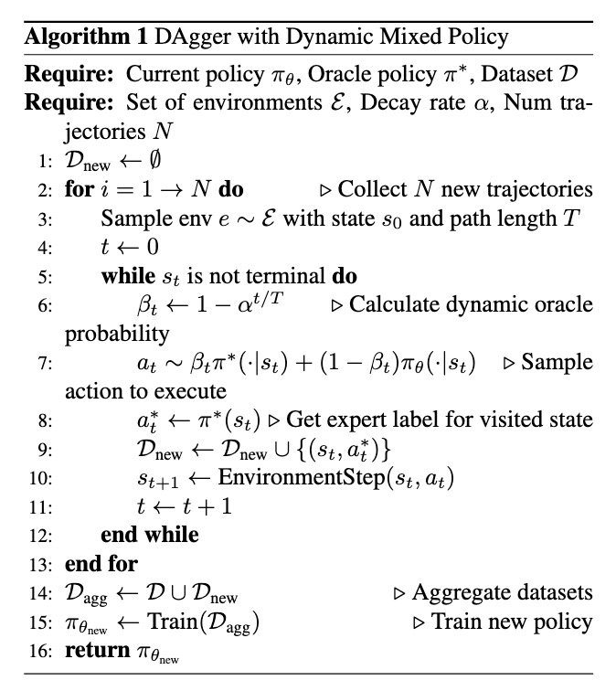
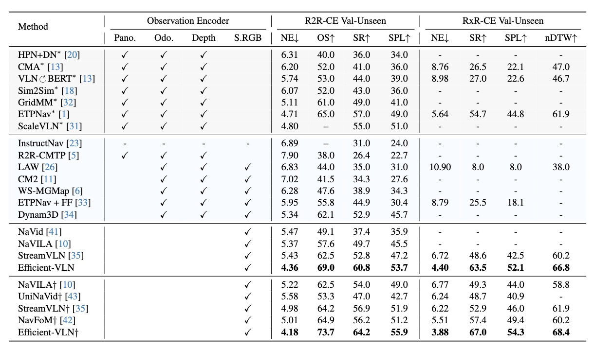

Multimodal large language models (MLLMs) have shown promising potential in Vision-Language Navigation (VLN). However, their practical development is severely hindered by the substantial training overhead. We recognize two key issues that contribute to the overhead: (1) the quadratic computational burden from processing long-horizon historical observations as massive sequences of tokens, and (2) the exploration-efficiency trade-off in DAgger, i.e., a data aggregation process of collecting agent-explored trajectories. While more exploration yields effective error-recovery trajectories for handling test-time distribution shifts, it comes at the cost of longer trajectory lengths for both training and inference.
To address these challenges, we propose Efficient-VLN, a training-efficient VLN model. Specifically, to mitigate the token processing burden, we design two efficient memory mechanisms: a progressive memory that dynamically allocates more tokens to recent observations, and a learnable recursive memory that utilizes the key-value cache of learnable tokens as the memory state. Moreover, we introduce a dynamic mixed policy to balance the exploration-efficiency trade-off.
Extensive experiments show that Efficient-VLN achieves state-of-the-art performance on R2R-CE (64.2% SR) and RxR-CE (67.0% SR). Critically, our model consumes merely 282 H800 GPU hours, demonstrating a dramatic reduction in training overhead compared to state-of-the-art methods.



